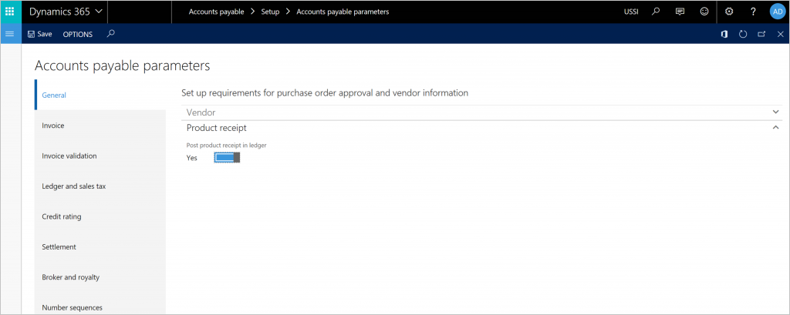
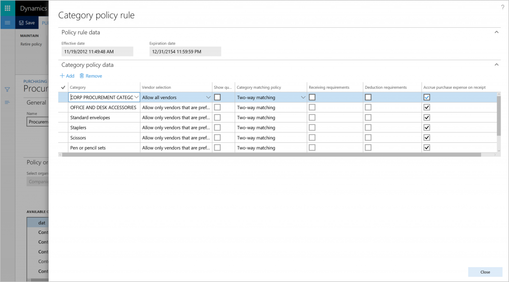
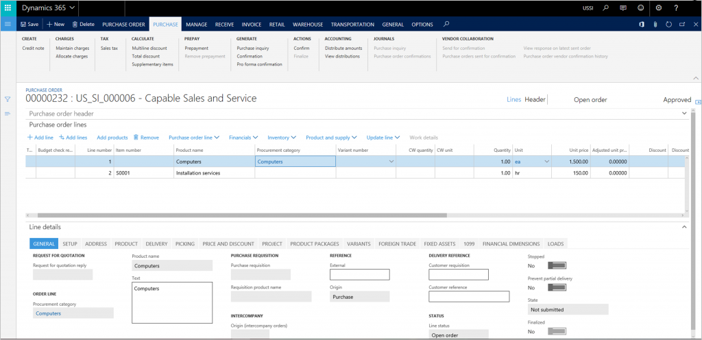
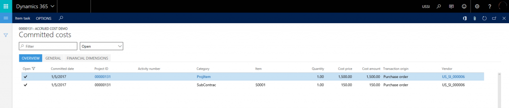
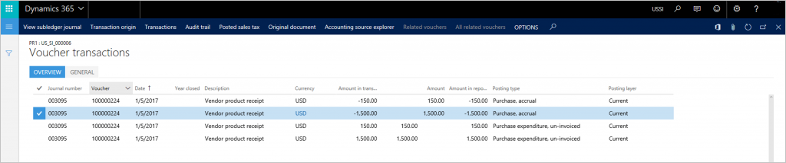
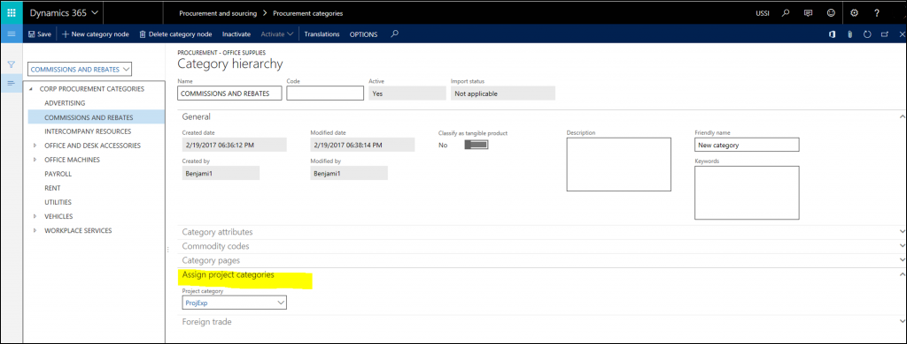
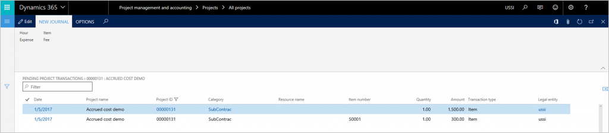
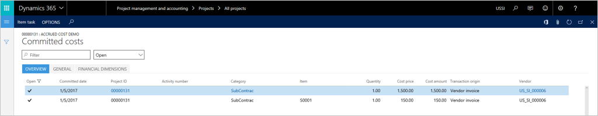

Project cost accrual on purchase receipts
This topic describes how accrued project costs from purchase receipts can be tracked in Microsoft Dynamics 365 Finance.
Invoices for a project often arrive later than the goods and services are delivered, which might have a significant impact on project key performance indicators (KPIs). It important to be able to track these transactions in both financial and project reports.
The following example scenario illustrates this.
Contoso Consulting has started a new cloud deployment project. A purchase order is created to buy a computer for the project. The computer will cost $1500 and installation services will cost $150. The vendor has delivered and installed the computer, but the invoice has not yet reached Contoso Consulting. The project manager would like to see project cost accrual of $1650 before the invoice gets delivered. This cost should also be reflected in the company's month end financial statements.
The accrued cost needs to be recorded on both the financial level and project level for reporting purposes. The financial update of the product receipt can be tracked for the item and procurement categories.
For items, on the Accounts payable parameters page, select the Post product receipts to ledger option. 
{kind=link}
For procurement categories, on the Category policy rule page, select Purchasing policies, and then select Accrue purchase expense on receipt for each procurement category. 
{kind=link}
The Purchase expenditure un-invoiced and Purchase accrual accounts in Posting setup will be used when vouchers that are related to the product receipt are posted.
Using this same scenario, let's see how posting a product receipt will impact General ledger and Project information.
Step 1: Create and confirm a new purchase order for the project to record the purchase of a computer for $1500 and installation services for $150. 
{kind=link}
When the purchase order is confirmed, transactions for the committed cost are created for the project. 
{kind=link}
Note
The transactions for the committed cost will have the Transaction Origin field set to Purchase Order. Creating and confirming a purchase order does not create transactions for a project.
Step 2: Goods and services get delivered and a product receipt is registered.
Posting a product receipt will generate and post a voucher to the ledger. The voucher will debit the purchase expenditure, un-invoiced account, and credit purchase accrual account. 
{kind=link}
Note
Posting a product receipt will use the posting setup for procurement categories and products, and not the posting setup for the project categories. In order to correctly reflect financial impact of purchase accruals, this setup needs to be aligned.
It is possible to map procurement categories to project categories on the Procurement category page. 
{kind=link}
Step 3: Create a draft vendor invoice.
Posting a product receipt does not impact project information. As a workaround, you could generate a draft vendor invoice right after posting the purchase receipt. Go to the Purchase Order page > Invoice tab > Generate > Invoice. This creates a pending invoice document that updates project information.
Creating a draft vendor invoice will generate pending project transactions. 
{kind=link}
In the Committed cost page, records created in step 1 will be closed and new records will be created to reflect cost commitment coming from the pending vendor invoice. The Transaction origin field for the committed cost will be set to Vendor invoice. 
{kind=link}
The vendor invoice will remain in a pending state until the actual vendor invoice arrives.